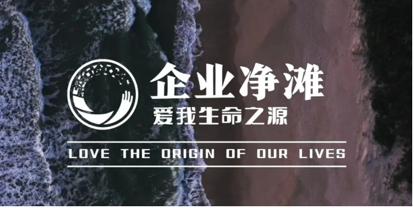
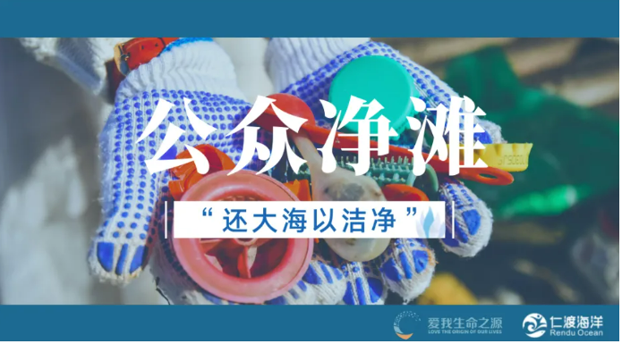
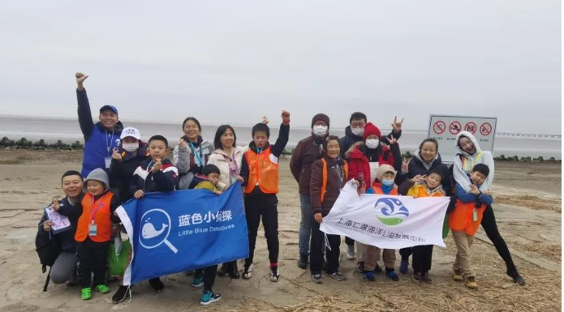
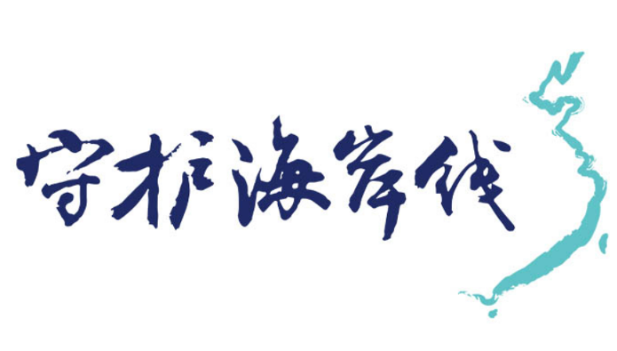

Shanghai Rendu Ocean NPO Development Center
Introduction to Us
Shanghai Rendu Ocean NPO Development Center (Rendu Ocean) is an environmental public welfare organization that is committed to managing marine waste. It was established in 2007 and registered as a private non-enterprise unit in 2013. The organization's activities include cleaning up marine debris, conducting research, providing environmental education, and building the capacity for the marine public welfare industry.
Wish:
Clean up the ocean and restore the friendly relationship between humans and the ocean.
Mission:
By organizing and supporting beach cleaning activities, we promote the management of marine debris and reduce the amount of garbage entering the sea.
Goal:
The most professional and proactive environmental public welfare organization in the field of marine litter in China.
Group History
Since its establishment, Rendu Ocean has made beach cleaning activities its main project. We hope to directly reduce marine litter through beach cleaning activities, promote the hazards of marine litter, and advocate for a waste-reducing lifestyle. We believe that beach cleaning is not only a final treatment and a process of improving the appearance of the beach, but also an educational advocacy and a process of influencing volunteers and surrounding communities.
As of the end of 2021, the project has organized a total of 3181 beach cleaning activities, mobilized nearly 125000 volunteers, and cleared over 510 tons of marine and river garbage.
In 2007, Rendu Ocean organized its first beach cleaning activity in Shanghai; In 2015, Rendu Ocean organized its first national joint beach cleaning activity. Nowadays, Rendu Ocean has explored and improved various forms of beach cleaning activities. They provide multiple channels for the public and enterprises to participate in beach cleaning, as well as suitable opportunities for parents to receive marine environmental education.
Since September 2015, Rendu Ocean has carried out two national joint beach cleaning operations every year: the Clean Sea Campaign and the International Beach Cleanup. We have joined forces with various environmental groups across the country to clean up beach and seabed garbage and restore the clean and original appearance of the beach and seabed. Since 2019, the initiative has also supported inland partners in clearing riverbanks, thereby reducing garbage entering the sea.
Nowadays, Rendu Ocean mainly carries out the following beach cleaning activities:
(1) Enterprise
Rendu Ocean provides customized beach cleaning opportunities for enterprises, which not only directly improves the beach garbage situation, but also enhances employees' environmental awareness and encourages them to participate in waste reduction actions in their daily lives and work.
(2) The public
Rendu Ocean strives to conduct a public beach cleaning activity once a month, subject to financial constraints. This volunteer activity is provided to the public to learn about marine litter issues, practice picking up beach litter, and participate in marine environmental protection public welfare. Citizens can obtain registration information on our WeChat official account.
(3) Parents & children
Rendu Ocean has designed a specialized beach cleaning activity for families aged 7-12. The project takes an educational and entertaining approach, including games, surveys, cleaning tasks, nature notes, and sharing sessions. This allows participants to experience firsthand the current situation and hazards of marine debris. The project will continue to interact with participants through a 'waste reduction record card' in the future.
(4) Others
Mainly refers to conducting specialized beach cleaning activities for scientific investigation, while conducting statistical research on coastal garbage during beach cleaning. The project collects data along the coast through point deployment and a complete set of standard data recording methods. Each project site shall carry out activities uniformly at the designated time, and the project team shall summarize data to understand the pollution status of coastal garbage in China while cleaning up beach garbage.
Beach Cleaning Suggestions
Participating in beach cleaning is a very meaningful activity! When you wish to participate in our activities as a volunteer, the following suggestions can further improve the efficiency and significance of your work, and protect yourself.
(1) Dress appropriately
Wear comfortable clothing and shoes to facilitate movement and cope with labor. On sunny days, please wear a hat, sunglasses, and sunscreen. It is recommended to wear long sleeved pants and do a good job of sun protection. The UV levels along the coastline are high, and you don't want your body's skin to get sunburned after hours of hard work. Please bring your raincoat on rainy days. Unless a typhoon or rainstorm, our activities will not be easily interrupted.
(2) Pay attention to environmental protection
Our core activity is environmental protection and we do not provide disposable paper cups. We suggest that you bring your water bottle. Bottled drinking water is usually provided on-site, and you can pick it up at any time as needed.
(3) Safety Notice
Please observe carefully when picking up garbage and avoid contact with sharp or dangerous objects. If hazardous materials such as broken glass, needles, etc. are found, please notify the organizers and do not pick them up by hand. We suggest that you wear gloves.
(4) Age restrictions
Individual volunteer registration must be at least 18 years old. Minors are requested to register for our volunteer activities with their parents. We do not accept individual registration from minors. Due to the physical exertion required for beach cleaning activities, it is not recommended for individuals aged 65 and above to participate.
(5) Pay attention to rest
In activities, you often need to participate in tasks such as garbage collection, garbage handling, and garbage recording and need to walk back and forth on the long beach. Therefore, we recommend that you prepare well before participating, get enough sleep, and maintain sufficient physical strength. We look forward to seeing your busy figure.
(6) Register in advance
All participants must register in our official account in advance so that we can register in time. We do not accept airborne members.
(7) Follow the command
Please follow the unified arrangements of the organizers upon arrival at the event site, fulfill the assigned tasks responsibly, gather in the designated area, and do not leave the team on your own.
(8) Record information
We suggest that you record the weight, type, and other information of the garbage you collect during the process of picking it up. Your data holds significant scientific importance!
(9) Actively promote
We look forward to you recording your wonderful moments while volunteering and actively sharing them with your family and friends, promoting our activities so that more people can understand and participate in the beach cleaning activities.
Contact us
Tel: 021-68360961
Email: info@renduocean.org
Zip Code: 200127
Address: Room 209, Building C, 613 Eshan Road, Pudong New Area, Shanghai